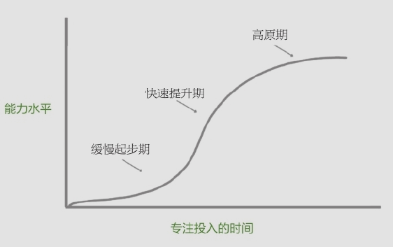

《精进》这本书在豆瓣的评分和亚马逊的排名都很高，的确，光看副标题，如何成为一个很厉害的人就挺吸引人，有太多的人都想变得厉害或者是更厉害了。于是我也在亚马逊买下了电子版，希望也可以把它当作一本秘籍似的来修炼。
本书的作者采铜，是一位知乎大牛，知乎是一个牛人辈出的地方，很多时候，生活中遇到的各种问题，总是能在知乎找到超乎想象的精妙的回答，而且对于同样的问题和事物会有很多不同人提供不同的分析角度，着实让人开眼。所以对于在出此书前就已经在知乎收获数十万粉丝、赞同和感谢来说，本身就是一种值得学习的成功。

在这本书里，作者为大家打开了人生的七个侧面，它们分别是时间、选择、行动、学习、思维、才能和成功。
时间是我们的坐标，我们做任何事情都离不开这个坐标，所以处理好与时间的关系，是我们生活、成长和改变的前提。
选择往往发生在十字路口，它令我们迷茫、无助和焦虑，而学会选择也就是学会认清自己在这个世界中的位置。
行动是生命力的象征，也是解决一切问题的归依，而令人不解的是现代人行动的步伐越来越沉重，无力感不断蔓延，所以我们更需要行动的勇气和智慧。
学习是人之所以为人的一个标志，对很多人来说更是融贯一生的修行，学习的规律和技巧正是很多人需要补上的一课。
思考发生在生活中的每时每刻，但是对思考本身的思考却显得稀少和珍贵，当我们想要解决工作和学习中的各种难题时，你便会发现它的价值。
在这个竞争激烈的社会，一个人的才能是立身之本，但如何获得不凡的才能对很多人来说是一个难解的迷团，解开这个迷团需要打破一些流传甚广的数迷障。
成功是一个让人爱恨交织的字眼，无数人为了所谓的成功变成了自己讨厌的人，而只有坚持做一个你所喜欢的自己，你才可能实现真正意义上的成功。
下面我就像考前划重点似的，把作者书中这七个方面所涉及的关键点罗列出来，分享给大家吧。下面这些都是归纳似的内容，因为没有列举太多形象的实例，阅读起来会难免枯燥，如果觉得某些观点对提自己的提升有帮助的，可以再仔细阅读原作中的相应章节。
–时间
一个人如何对待时间，决定了他可以成为一个什么样的人。对待时间，我们应该学习孩子似的”郑重”态度，不敷衍、不迟疑、不摇摆，认真地聚集于当下的事情，自觉而专注地投入。因恪守本心而知事情轻重缓急，因尽全力无保留而使其事尽成、光阴未曾虚度。
在不同场合我们应该要有不同的时间视角。斯坦福著名心理学家菲利普·津巴多提出用”时间视角”这一概念表示人们对过去、现在和未来的不同态度。他发现，根据不同的时间视角可以划分出五种人：
第一种是积极过去视角，具有这种视角的人总以积极的心态往回看，他们是怀旧的，经常怀念过去美好的东西，珍视亲情和友情，对已经拥有的东西怀有感恩的心，但这样的人容易忽视当下的快乐。
第二种是消极过去视角，具有这种视角的人总以消极的心态往回看，他们经常回忆人生的负面经历，沉浸在以前的伤害中无法自拔，因而出现心理问题的可能性比较大。
第三种是享乐主义视角，具有这种视角的人总以享乐的心态看待当下，他们认为及时行乐是第一要务，回首过去和展望未来无太多必要，尽情享受当下便好了，他们的幸福感比较高，但出现成瘾行为比如吸烟、酗酒或暴饮暴食的风险比较大。
第四种是以宿命为观点看待当下的人，即具有宿命论视角，他们对事实发现的事情感到无能为力，认为一切都是命中注定，自己只能顺从和忍受外界的安排。
第五种是习惯往前看、为未来谋划的人，这种视角称为未来视角，他们具有前瞻性，更关注有待完成的目标和任务。为了完成未来的目标，他们愿意放弃当下的享乐，时间的利用更有效率，因而更容易取得比较高的成就，但是由于一直为未来担心，所以幸福感并不强。
津巴多同时建议人们不要维持单一视角，最好采用混合折中的方式：多采纳积极过去视角、享乐主义和未来视角，并且在这三种中取得平衡，少采纳负面作用明显的消极过去视角和宿命论视角。并且，在采纳前三种视角时要随需而变，根据不同现实场景灵活选择。具有了这种平衡时间视角的人，在内心具有一种”延伸的当下感”，既可以”从当下审视过去”，也可以”视未来存在于当下”，他应具有囊括过去和未来的包容性。
从”平衡时间观”和”延伸的当下感”出发，下面是十条建议：
1.生活在当下--不瞻前顾后，不左顾右盼，不患得患失。
2.严肃地对待时间--审慎、郑重地思考时间对我们的价值并用好它。
3.留意自己拥有的时间并享受它--找到自己的"独享时刻"，不要疲于奔命。
4.反思自己和其它人的时间视角--认识到自己和他人时间视角的不同，换位思考。
5.从现在出发联结过去--过去并没有远去，它对信仍有意义。
6.并不完全沉浸于过去--比过去更重要的是现在。
7.制订实现目标的计划--未来视角让我们的行动更加有序。
8.平衡计划和非计划时间--由于随机性和不可预见事件的影响，我们的生活并不能完全被计划，我们需要在未来视角和现在视角之间的找到平衡点。
9.视未来存在于当下--未来并非遥不可及，它就出现在即将到来的每分每秒。
10.对未来保持积极的态度--既然未来难以预测，那么以积极的心态面对它能让我们在当下更有行动力。
心理学家把未来分为近期未来和远期未来。远期未来的视角下，人们倾向于用抽象、概括的方式去思考。而在近期未来的视角下，人们更容易到具体的情境中去考虑，想的更多的不是”要不要做”，而是”怎么去做”。
从远期未来的角度，我们应该”重战术、轻战略”，减少对价值和意义的强调，也不要一个劲的担心目标没有完成怎么办，而是应该多思考实现目标的具体途径，把注意力放到”怎么去做”上，特别是放到那些立即可以实施的行动上。从近期未来的角度，应该提高逃避的成本，甚至可以采用一些极端的措施，比如删除所有的电影、游戏，拔网线，把手机换成非智能手机等，从而增加我们去做实现目标路径上的事情的可能性。
因此要处理好远期未来和近期未来，我们可以采用以下两个策略：
1.使远期未来的目标更加具体化、情境化和可实施；
2.降低近期未来中的"非期望性行为"的便利性，主动增长挑战难度。
在分析一件事情值不值得去做、花多少精力去做的时候，可以从两个角度来评估，一是这件是在当下给我带来的收益的大小，这个收益可以是心智、情感层面的，也可以是身体、物质层面的，称之为”收益值”；二是这项效益随时间衰减的速度，称之为”收益半衰期”，半衰期长的事件，其影响会比较深远。
通过这两个角度可以可以组成四类事件：
高收益值、长半衰期事件：找到真爱，学会一种有效的技巧，与"大牛"进行一场意味深长的谈话。
高收益值、短半衰期事件：买一件当季流行的衣服，玩一下午手机游戏，以"扶墙进、扶墙出"的方式吃一顿大餐。
低收益值、长半衰期事件：练一小时书法，背诵三首诗，读懂哲学著作的一个章节，多重复一组技能练习，认真回复邮件。
低收益 值，短半衰期事件：挑起或参与一起网络掐架，漫无目的地刷微博、朋友圈，使用社交软件窥视别人的隐私。
现代社会的快节奏、碎片会和功利性等特点，使得现代的人容易陷入”两个无能”之中，一是”选择无能”，二是”执行无能”。
选择无能：我们很难判断两个事情哪个更重要，比如两本书看哪一本，两个证书考哪一个，结果在犹豫中寸步难行。
执行无能：我们明知道这个事情很重要，但就是不去做。一个事情往往看上去越重要，内心的恐惧感就越强，就越容易拖，最后一事无成。
对于这种情况，作者提出了”采铜法则”，就是一句简单的行动规则：尽量少做短半衰期的事情。这个法则暗藏两层含义：
1.收益值的高低无关紧要，只要是长半衰期的事情，只要这个收益可以被累加，就尽管去做。
2.不要只盯着那些”高大上”的事情，一些不重要、不紧急的事情，只要对你的长期有益处，仍旧可以去做。
–选择
决策心理学认为，人在面临选择时，通常会采用”满意原则”，而不是”最优原则”。因此，一个人会不会做出一个尽量好的选择，跟他所采纳的标准有很大的关系。一个成熟的人，他的标准来自他的内心，而大多数人，却容易被环境左右。一个人为自己内心树立什么样的最高目标，设定什么样的价值尺度，反映了他的”格局”。
说到格局，电影《一代宗师》里作了很好的回答，即”看自己、看天地、看众生”。在此基础上稍加发挥，提出四个层次格局，并从目标、眼界和信念三个维度来阐释这四个格局。
零度格局：盲众（”看不见”）
目标：无目标或者追随潮流。
眼界：主要为流行文化，以及身边亲友的观点。
信念：以”人生苦短、及时行乐”等流行文化所潜移默化传递的价值观为典型。实际上这类人并无稳定的信念，很容易被他人诱导和说服，因而经常大喊”毁三观”。
一度格局：逐利者（”看自己”）
目标：作为精致或粗放的利己主义者，旨在寻求自身利益最大化。
眼界：与逐利相关联的各种知识和技能，包括对利益机会的洞察，同时兼具比较完整的常识体系。
信念：笃信丛林法则，认为每个人都是逐利性动物，且能力越强的人获得越大的利益。
二度格局：理念人（”看天地”）
目标：理念人，即指为理念而生的人，他们毕生的行动就是追求和捍卫真理。
眼界：对某个甚至多个知识领域有非常深入、系统的钻研，并常常能提出极具创造性的观点。
信念：真理是美的，人生的价值就在于追寻真理之美，与此相应地，必须保持内心的诚实。
三度格局：至善之人（”看众生”）
目标：以改良社会、增进人类福祉为最高目标。
眼界：往往对他人有很强的同理心，对人类社会的历史和现状有深刻的认识，部分人可能同时具有某个专业领域的知识，兼具理念人的特性。
信念：个人对整个社会负有责任，应该努力地去改善世界，减少世界的苦难和不公，部分人可能有坚定的宗教信仰。
很多人的烦恼来自同时有多个不同的人生目标想实现，但又不知道怎木处理多个目标之间的关系。我们追求两个以上人生目标时，最常见有两种模式，一种是串行模式，还有一种是并行模式。串行模式必须在目标A实现后才能实现目标B，实现目标A是实现目标B的前提，比如有些人会说他的人生目标是先赚钱再做慈善。并行模式指的是同时追求目标A和目标B。
而我们可以采用目标悬置的方法，就是把你的目标停下来、放一放，但是这个放不是放弃，只是悬置。在停下来的时间里，可以休息放松，也可以做万全不同的事情，等时机成熟时，又可以重新开始。
当代社会和过去的一个不同点是，过去人们常常因为选择及其有限而痛苦，而现在的人们常常因为选择过多而痛苦。那么，我们该如何在众多的选择中找到一个最适合自己的并确信这个选择时是正确的呢？其中一个方法是”精细化思考”，利用适当的工具，对各个选项从不同方面进行深入、细致的分析，最后综合分析结果得出答案。
第一步，重新定义问题。
第二步，因素穷举。
第三步，因素赋权。
第四部，因素加权打分。
类似于这种维度分析和打分的精细化思考方法虽然很有效，但是并非适用于所有需要作选择的情境，尤其对于涉及感情、喜好等主观意味特别强的情况，或者复杂度过高、牵涉面过广的情况不适用，这时，聆听内心直觉的声音可能比理性分析更好。
另外，要知道选择是可以被修正、被重塑的，单次选择的重要性也许被我们高估了。但这也并不意味着被修正的选择毫无意义。如果我们从整个人生的视角来看，人生就是一个不断选择再选择的过程，在这个过程中，会发生某些我们期待或者并不期待的改变，但不论如何选择，某些深刻的经历和体验会被永久地保留下来，成为我们人生中无法改变的印痕。
–行动
开始并完成一件事情，比做好它更重要。因为只要开始了，你就有机会把它做的更好。在生活中，把必须要做的小事处理掉，是我们保持积极和从容心态的一剂良方。种一棵树最好的时间是十年前，其次是现在。所以，即刻行动应该是我们最重要的一条行动法则。
我们可以从精益创业中获取行动启示，把”未完成”变成”已完成”。精益创业，是当前互联网创业最流行的方法之一。精益创业中有个关键概念叫”最小化可行产品”，它指的是可以用最小的资源、被最快制作出来的、可执行基本功能的、能被用户使用的试验性产品。创业者应该最快把最小化可行产品发布出去，然后根据用户使用它的反馈来进行优化，这一过程称为”构建－测量－学习”的循环。
精益创业的价值在于，在动态演技的市场里，找到一种可操作的适应市场的方式。那么一个人的最小化可行产品是什么呢？我们先搞清楚”产品”这个概念的内涵：
1.”产品”不是过程，而是结果。
2.”产品”不是对原料、素材的简单堆积，而是对它们结构性的整合和组织。
3.”产品”不是创造者锁在自己保险箱里的东西，而要背起他人使用和检验。
4.”产品”能够独立对世界产生影响，它应该能创造出正向的价值，使人受益。
5.”产品”也是一种媒介。
按照这个内涵去理解具体到每个人个体的产品是什么就不难了。比如，在某家公司的工作经历不是产品，基于工作经历写成的系统性总结报告可以算作产品；阅读一本书的经历不是产品，但对这本书深入、透彻分析的文章可以算作产品；拥有绘画的技能不是产品，但是用这种技能创造的绘画作品算作产品。
所以以精益创业方式去走向人生的成功，便要做到以下三点：
1.客服”过度准备”的惯性，向前一步，把未完成的事情完成。
2.客服”自我防卫”的心态，乐于接受反面意见并加以慎重地审视。
3.客服”沉没成本”的固执，有勇气否定并重新构造自己的产品。
在我们的行动过程中，总是会遇到有多个任务需要并行处理的情况，这个时候我们可以把性质相同的工作集中在一起进行。比如现在有两个任务要做，一个是写word文档，另一个是做一个ppt，常规的做法是先把一个做完再做另外一个，或者一个先做一部分再做另外一个。而还可以这么做，把word任务分解为word文字、word图示、word排版三部分，把ppt也分解为ppt文字、ppt图示、ppt排版三部分，然后将相同类型的工作组合在一起，于是工作的次序如下图：
在做完一件事后，我们还需要进行反思。反思可以从以下几方面来进行：
信息
在做这件事时我利用了哪些信息？其中哪些信息是最关键的？这些信息从哪些渠道中得来的？哪些渠道被证明是很有价值的？我可能遗漏了哪些信息？这些信息可以怎么得到？
预期
在做事之前，是否对事情的过程和结果形成了正确的预期？我为什么会形成这样的预期？是什么造成了预期和事实之间的偏差？我的预期是否促进或者阻碍了事情的进程？今后应该如何管理自己的预期？
结果
怎样描述这件事的结果？怎样评价这件事的结果？在描述和评价这件事的结果时我用了哪些指标？这些指标是否需要改进？结果需要哪些改进？如何改进？
进度
事件的进度合适吗？是快了还是慢了？是什么因素导致了这样的结果？当进度出现问题的时候使用了哪些手段进行干预？效果如何？为什么效果理想或是不理想？
工具
在完成这件事情的过程中，我使用了哪些工具？哪些工具起到了重要的促进作用？哪些工具起到了阻碍作用？如何改进现有的工具使其发挥更好的功效？
情绪
在做事的过程中我的情绪状态几什么样？是否出现过情绪失控的情况？是什么引发的？我是否有意识地调整自己的情绪？在调整的期间使用了什么样的方法？是否需要改进？
阻碍
在做事的过程中我遇到了哪些阻碍？其中最重大的阻碍是什么？我如何应对这些阻碍？取得了什么效果？这些阻碍哪些会长期存在？我需要通过什么持续努力来减少这些阻碍？
优势
在做事的过程中，我发挥了什么样的优势？是否有什么优势还没有利用和发挥？在做事的过程中，我的主要收获有哪些？我的哪些知识和能力得到了提升？我可以向做同类事情的起他人学习什么？他们有哪些优势是我不具备的？
缺憾
在做事过程中，我的遗憾有哪些？最大的遗憾是什么？是什么原因造成了这个遗憾？在做事过程中，我暴露了哪些缺点？其中哪些缺点是必须迫切需要改正的？关于这件事，别人对我有什么批评和评价？他们的批评有哪些可取之处？
意义
这件事对我来说最大的意义是什么？对我的短期生活和长期生活分别有什么影响？这件事对周围人、对社会、对整个世界的意义分别是什么？我发现了哪些意想不到的意义？
–学习
只有最后能够作用于现实的学习，才是唯一有效的学习。好的学习者，首先要问自己提问。通常，不经提问的学习过程往往有以下几步：订立计划，实施学习，回顾和整理。能做的这三步的已然是比较优秀的学习者了，但是这歌过程中，占据核心位置的是既成的已有知识，而不是心中的困惑–那些待解的难题。
以既成知识为核心的学习，学习者扮演的只是一个吸纳者或者搬运者的角色，他们把外部的知识经过消化后搬运到头脑内部，只不过完成了知识在不同载体之间的传递。这种学习中，知识在传递过程中的精确性、完整性被认为是至关重要的，而学习者自身的心智，包括它的原有知识体系、方法、观念乃至困惑，却可以被搁置起来，不闻不问。
而问题就像向导，引领着我们去接近知识的高山，这个引领本事，依赖于我们已经看到的、模糊的轮廓。问题并非空中楼阁，而是建立在已有基础上的。所以，我们不妨思考以下四个问题：
1.针对当前的学习材料，我具备了哪些相关的知识？
2.针对当前的学习材料，我又学到了哪些新的知识？这些知识对原又知识构成了补充还是挑战？
3.针对当前的学习材料，还有哪些未知的东西，且这些东西我通过简单的探索就可以理解？
4.针对当前的学习材料，还有哪些未知的东西无法轻获得解答，同时又有价值成为我长期去探索的问题？
互联网时代，很多人养成了一种囤积癖，在网上下载很多东西，书、软件、电影，积累了很多G，但下完后又放在那里，懒得去看了。还有一些好学的人，像兢兢业业的蜜蜂，在网上看到好文章就一篇一片收藏起来，或者拷贝到笔记软件里，这种资料的收集固然好，可是经常只是存而步阅，不过是做了知识的搬运工。也有人喜欢阅读，但是他们看得不够精细，什么东西都是粗粗一览，更不用说在碎片化的阅读时代，在手机上看东西本来就不易深入。
这些现象都有一个共同的症结，就是我们面对如此多的信息资料，只会做浅层次的加工，没有从深处审视，更步用说去做一些”解码”的工作。简单的说，解码不外乎下面三个层次：
1.它说了什么？给了我什么感受？（它原本就要传达的信息和知识）
2.它是什么？对我有什么价值？（对内容的反思，以审视的目光对内容进行评价和定性）
3.它的内部是怎样组成的？它的效果是怎么实现的？（对形式和构成的洞察，研究内容表达的手法）
我们如果想解码，这里给出三个寻找入口的路径：
1.不只要去寻结论，还要寻过程。
2.不只要去做归纳，还要去做延展。
3.不只要去比较相似，还要比较不同。
而最有效的学习方式，就是：做中学（learning by doing）。你掌握了多少知识，并不取决于你记忆了多少知识及知识的关联，而是取决于你能调用多少知识及知识的关联。
求知分为三个层级：信息、知识和技能。最差的学习者只接收信息，贪多求广；好一点的学习者看重知识，以记忆为目标；高手则磨练技能，只求日日精进。信息、知识和技能并不冲突，只不过技能是终点，前两者是迈向这个终点的路与桥。
–思维
大脑需要”断舍离”，简化，是清晰思考的前提。下面是一些有效过滤没有价值信息的方法：
1.精选可信赖的信息源。
2.不追逐当下流行或过热的信息。
3.重事实信息，轻观点和评论。
4.定期闭关，屏蔽外界纷扰。
表达是训练思维的一种习惯。好的表达对思考强度的要求是成倍上升的，正所谓”吟安一个字，捻断数茎须”。所以有意识地培养自己简洁表达的习惯，是提升思维能力的一道法门。但简洁并不是简单，乏味不是简洁，简洁并不是一味地删减，而是某种合理的”适度”。我们可以从三个方面去探索简化思维之道：
1.基于深入了解的"删减"：把任何不必要的东西去掉。
2.基于深入了解的"浓缩"：把丰富的信息浓缩并灌注进一个"小容器"中。
3.基于深入了解的"模式化"：找到共通的模式在现象间建立联结，并加以压缩归并。
在思考解决某些问题的时候，潜意识有时会帮助我们思考，即便在我们不主动相一个问题时，潜意识也在非常勤奋地为我们工作。更有意思的是，潜意识不会被条条框框限制住，它像不羁的游侠，游走在我们思考疆域的角角落落。要想让潜意识更有效的工作，就必须向潜意识投喂足够的资料，有了这些资料，潜意识就会对它们进行重新组合，直至最好的想法出现。正如产生创意的五个思维步骤中，潜意识思考就占据了核心的地位：
1.尽可能地搜集原始资料。
2.重复"咀嚼"原始资料，构思初始创意。
3.中止有意识的思考，启动潜意识思考。
4.随时准备迎接"灵光乍现"时刻的来临。
5.加以改造、完善，使之切实可用。
按部就班的生活、学习和工作可能并不适合产生新的想法，当每天发生的事情都在意料之中，当每天我们都在重复接收相同或者相似的信息，当每天我们只是在一遍一遍重复和强化我们固有的想法，那么我们的潜意识可能就无所作为。所以在必要的秩序和规则之外，我们可以从多个方面，有意识地引入一些混乱、随机和意外的成分，让这些东西成为培育我们新想法的土壤。
把思维转化成为外显的图形，为我们的思考扩展出更大的空间。图解思考的基本原则是：基于思考的内容本身，自行创造或设计与其相匹配的图形式样。也就是不拘一格。很多人都喜欢使用思维导图，但它只不过是千千万万图形结构中的一种。如果我们能够经常从具体的思考情境出发去构想相应的图示，那么我们的思维能力就也可以得到显著的提升。下面就是一些流程图和结构图的主要类型：
人的思考可能会有很多毛病，会被很多生动的个案吸引，会固执地捍卫自己的观点，还会对自己的未知领域毫无洞察。未了克服这些毛病，我们需要一些”工具”，来为我们的思维提供某些框架结构，或者提供某些支撑，我们称之为”思维脚手架”，它们可以帮助我们的思考更自如地伸展开来。最常用的”脚手架”是矩阵和清单。
利用矩阵这个工具，我们可以对问题进行不同维度的分析和组合，进而提升问题分析的深度和广大。使用矩阵的方法，我们可以采用如下三个步骤：
1.抽象出尽可能完整的分解问题的维度（比如产品的最终形态无法穷举，但是决定产品形态的抽象维度，也就是特征，可以穷举）。
2.对每一维度，通过取反、细分等操作，找出尽可能多的表现值，以构成维度矩阵。
3.在维度矩阵中不同维度的表现值之间尝试建立各种组合。
如果说矩阵是一种利用特定结构来扩展思维的工具，那么清单就是用穷举法来扩展思维的工具。清单是一种”强制思考工具”，当你借助清单进行思考时，你需要逐一检视清单中的每一项，并将其与标准指标进行核对。而好的清单，是经过提炼的智力框架，帮助我们的思考至少达到基本的周密。下面就是列举了关于清单优点的清单：
1.清单时知识传递的一种高效方式。
2.清单可以减少遗漏。
3.清单可以减少信息的冗余。
4.清单可以将过去不同质的食物罗列在一起，只要这些食物在某些方面具有一致性。
5.清单可以作为行动指南，它本身就是一个可操作性的工具。
6.清单可以规律性复用，因而可以用于培养行为习惯。
7.清单作为一种强制性的固定模式，可以使思考过程抵御情绪化或非理性因素的干扰。
8.建立清单非常简单、快速。
9.清单具有无限扩展性，可反复完善。
人的思维是一种比较奇怪的东西，它并不像我们想象的那样是凝聚的、坚固的、稳定的，反而是跳跃的、流动的、易变的。它不像一座高山，更像一条河流。它如何流动，是静水深流还是激流险滩，取决于承载它的地形。一旦我们使用清单这种外在的形式，我们就倾向于罗列很多很多东西，使这个单子不断拉长；一旦我们使用矩阵这种形式，我们会更多考虑不同维度之间的组合效果；一旦我们用图形来表现我们的思考，那么这些图形本身就成了拉动思考的引擎； 一旦我们容许异质元素的混搭造成的混乱，那么各种新奇的灵感就会像泉水一样涌现。
–才能
人的才能发展是基于过往学习经验的积累，我们在才能上的学习积累通常呈现出S形曲线的特征：

大多数人都在缓慢起步期就”死”掉了，小部分人爬到了快速提升期，而只有极少数人到了高原期，笑傲江湖。那么停留在缓慢起步期的后果就是，你要和大量的同样处在缓慢起步期的人竞争比较初级的工作岗位，即便就业成功也只能得到较低收入和较低前景的工作。
于是，从上图我们可以看出一个清晰的事实，浅尝辄止的人很可能将一无所获，而专注投入走到最后的人将获得超额的收益。
一部智能手机在手，我们的时间就被分割得七零八落；每天各式各样的信息如潮水般涌来，让我梦无所适从，不知如何选择；我们的耐心越来越少，我们总是被标题吸引，打开正文匆匆看两眼又马上关掉；每天翻新网络热点，无外乎性、谎言、奇闻和窥探，到第二天就被我们忘记得一干二净；我们幻想在一篇文章中找”干货”，希望发财致富、人生辉煌的不传之秘能被一二三四五和盘托出，没想到只是又一次被骗了点击；我们总是在找更多的资源，搜索、下载、囤积，然后闲置，错把硬盘当成自己的大脑……
努力培养自己才能的路上，我们要懂得”舍弃”，有舍，方才有得。我们有时候精力旺盛、兴趣广泛，什么知识都懂一点，什么事情都要尝试一下，可是什么事情都做不精，没有什么东西是真正擅长的，就像挖了很多口很浅的井，结果一口井都没有水出来，白费功夫。在这个互联网时代，信息是爆炸的，知识是过载的，观点是鼓噪的，热点是速朽的。而反过来，专注在一件事上，精益求精、持之以恒的态度和行动，则是最稀少和最珍贵的。
具体来说，假如每天有十个小时固定的学习时间，那么可以选择”二八开”的方式，把其中8个小时专注在主业上，在这些时间里，必须时刻提醒自己避免各种网络噪声的干扰，不要让各种社交媒体或其他媒介分散注意力；而在余下的两个小时中，可以完全自由的学习，接触各种不同领域的知识，学习一些小而美的技能，尝试一些有创意的游戏……
–成功
让自己变得独特是通向成功的必要条件。具有独特心智特性的人具有以下优势：
1.在主流观点之外洞察出别人未曾发现的机会；
2.形成个人核心竞争力，避免低层次的同质化竞争，使自己不可替代；
3.拒绝他人和大众给自己贴上的标签，以更开放和自由的心态发展自己；
4.因为不必迎合社会主流而节约了大量的时间精力，可以专注于做好自己的事情；
5.为大众带来新鲜的见解和启发，形成对公众的影响力;
6.具有更高的可辨识性，更易于形成个人品牌；
7.吸引到其他独特而优秀的人，与他们成为朋友或者合作伙伴。
不要为了追求社会认同而做事，如果只是拼命去迎合主流标准，说大家喜欢听的话，做大家喜欢做的事，最后的结果不是被认同，而是被忽视。如果我们可以避开追求社会认同的陷阱，意识到要去做一些酷的事情的价值之后，我们可能便走上了因独特而成功的道路，在这条道路上，下面七个方法能助我们一臂之力：
1.抗拒自己的欲望，或者延迟满足欲望；
2.质疑貌似可信的言论，不盲从任何人；
3.屏蔽流行信息，或者只是在固定时段接收流行信息；
4.思考最不可能的事，为其发展出可能性；
5.保留和发展自己的"怪癖"，并将其发展成自己的竞争力；
6.为小事物狂热，并在小事物中发现大世界；
7.开展思想试验和行动试验，让思想和行动相互激发。